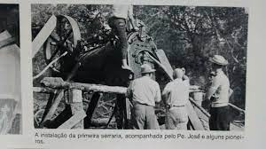

História
Missal, uma cidade acolhedora, que cultiva as tradições alemãs, herdadas de seus pioneiros, teve sua formação a partir do desmembramento do município de Medianeira e a data oficial da sua criação foi em 30 de dezembro de 1981, por meio da Lei Estadual n° 7.566. Teve sua Emancipação Política-administrativa, no dia 01 de fevereiro de 1983, data esta que marca a posse do primeiro prefeito do Município de Missal, Luciano Kreutz, além da primeira Câmara de Vereadores de Missal, tornando assim, Missal um Município independente. O evento de posse da primeira Legislatura de Missal, aconteceu no Clube 19 de Março, onde Luciano Kreutz assumiu o cargo de Prefeito, tendo como seu vice Afonso Paetzold e vereadores Rudi Scherer Paetzold (Presidente 1985/1986), João de Pieri (Presidente 1983/1984), Irani Teresinha Giehl (Presidente 1986/1988), Flávio Alvício Griebler, Aloísio Arlindo Fritzen, Silvestre Michels, Casemiro Schimanski, Orlando Bremm e Ermindo Junges. No dia seguinte, 02 de fevereiro de 1983, foi realizada a primeira reunião da Câmara Municipal de Missal. Na época, durante o mandato desta Legislatura, foram realizadas 209 Sessões Ordinárias, 89 Sessões Extraordinárias, 05 Sessões Solenes, além de 130 Projetos de Lei aprovados, 09 Projetos de Lei do Legislativo, 168 Requerimentos, 11 Decretos Legislativos, 51 Resoluções, 50 Convênios, (Referendados)..
Turismo
Missal é o local ideal para quem procura tranquilidade e alimentos coloniais diretamente do produtor rural.
 O Município integra o projeto Costa Oeste, que prevê investimentos nas áreas de lazer e turismo nos Municípios lindeiros. A praia artificial surgiu com a construção da Barragem de Itaipu.
Na colonização de Missal desde o início predominou a população de origem germânica. Grande parte dos colonizadores que chegaram em 1962, eram da segunda geração de imigrantes alemães e trouxeram consigo características da cultura germânica expressas nas construções m chaimel, decorações, jardins floridos e na gastronomia.
As tradições gaúchas são cultivadas no município por meio de festas, bailes, fandangos, rodeios de laço e churrascos.
O Município integra o projeto Costa Oeste, que prevê investimentos nas áreas de lazer e turismo nos Municípios lindeiros. A praia artificial surgiu com a construção da Barragem de Itaipu.
Na colonização de Missal desde o início predominou a população de origem germânica. Grande parte dos colonizadores que chegaram em 1962, eram da segunda geração de imigrantes alemães e trouxeram consigo características da cultura germânica expressas nas construções m chaimel, decorações, jardins floridos e na gastronomia.
As tradições gaúchas são cultivadas no município por meio de festas, bailes, fandangos, rodeios de laço e churrascos.
Cultura

A cidade é conhecida por suas festas e tradições culturais que atraem visitantes de toda a região.Em relação à cultura e história, existem relíquias expostas no Museu Municipal. São objetos doados por famílias de pioneiros, à disposição para visitação em horário comercial ou com prévio agendamento. Missal tem, em sua área territorial, muitos espaços preservados, que podem ser apreciados pelos amantes da natureza ou do esporte, belas paisagens naturais e passeios náuticos junto ao Lago de Itaipu, além da cultura germânica demonstrada através das festas, da alimentação e das características físicas dos moradores. Tudo isto são atrativos imperdíveis.Localizado às margens do lago de Itaipu, distante 14 quilômetros da sede do Município, o Terminal Turístico de Vila Natal é um dos principais pontos turísticos de Missal. Recebeu este nome porque ali ficava a Vila Natal, cujos moradores foram indenizados com o alagamento de Itaipu. Anualmente, milhares de pessoas visitam o local, por ser considerado um local sossegado e agradável, com água de ótima qualidade, conforme análises do Instituto Ambiental do Paraná (IAP). Oferece local próprio para acampar, com muitas árvores, churrasqueiras, banheiros, quadra de esportes e um amplo pavilhão de festas, onde também são oferecidos refeições. O Terminal Turístico recebe constantes investimentos que visam manter e melhorar a boa infra-estrutura existente para que o veranista tenha um local aconchegante e tranqüilo. É palco de grandes eventos, como: Desafio de Pesca à Corvina, Festa dos Navegantes, apresentação de Bandas, gincana de verão, show pirotécnico na festa de revellion entre outras opções de recreação. Para quem gosta de esportes aquáticos como Jet-ski, pesca esportiva e passeios náuticos podem apreciar pelas paisagens, enseadas e ilhas formadas pelo Lago de Itaipu.